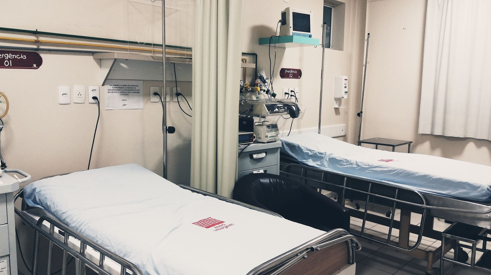

A new commitment to pediatric welfare
In a significant move aimed at addressing one of the most pressing issues within the National Health Service, the UK Health Secretary has declared that ending corridor care for children will be a top priority. For years, the sight of young patients being treated in hospital hallways has become a distressing symbol of a system under immense pressure. This new directive aims to restore dignity and safety to pediatric medical environments.
The announcement comes after years of mounting criticism from medical professionals, parents, and advocacy groups. The practice of treating children in non-clinical spaces like corridors is not only a matter of comfort but a significant concern regarding infection control and the quality of acute care. By placing this at the forefront of the health agenda, the government is signaling a shift toward systemic structural reform.
The impact of corridor care on children
Treating children in corridors presents a unique set of challenges that differ significantly from adult care. Children require a specific environment that supports both their physical recovery and their psychological well-being. A hallway is often loud, drafty, and lacks the privacy necessary for sensitive medical procedures or for families to support their sick children.
No child should ever have to undergo medical treatment in a hallway, as it undermines the very foundation of compassionate healthcare.
Addressing the root causes of hospital overcrowding
While the pledge to end corridor care is a vital step, experts argue that it cannot be achieved without addressing the underlying causes of hospital overcrowding. The current crisis is a complex web of factors, including an aging population, staffing shortages, and a backlog of elective surgeries that has persisted since the pandemic.
To truly solve the problem, the Health Secretary must navigate several logistical hurdles. This includes increasing the number of available pediatric beds, improving the flow of patients from hospitals to social care settings, and ensuring that emergency departments are equipped to handle surges in patient volume without defaulting to hallway placement.
Strategic steps for the health department
The government's strategy to implement this change involves a multi-faceted approach. It is not merely about building more wards, but about optimizing how existing resources are utilized across the NHS. This includes investing in digital health technologies that can better predict patient flow and prevent bottlenecks before they lead to overcrowding.
Looking toward a more stable future
As the UK government embarks on this mission, the eyes of the nation remain on the Health Secretary to see if these promises translate into tangible changes on the hospital floor. The success of this initiative will be measured not by political rhetoric, but by the number of children receiving care in safe, dedicated, and quiet clinical environments.
While we focus on domestic healthcare reforms, it is important to remain aware of how global political shifts can influence broader economic stability and resource allocation. For instance, recent international developments, such as when Trump Waives Russia Sanctions Amid Zelensky Tension, show how quickly the global landscape can shift, potentially impacting various sectors of public spending and international relations.
See Also
If you enjoyed this Current Events article, check out Trump Waives Russia Sanctions Amid Zelensky Tension for more useful reading.